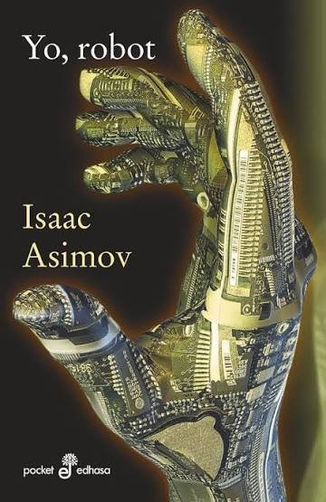

EL ESTANTE COMÚN
Detalles del libro
|
 |
Yo, Robotpor Isaac Asimov SINOPSISYo, robot, de Isaac Asimov, es una colección de relatos de ciencia ficción que explora la relación entre los seres humanos y las máquinas inteligentes. A través de distintas historias, el autor presenta dilemas éticos y situaciones en las que los robots deben enfrentarse a las famosas Tres Leyes de la Robótica. Una obra fascinante que invita a reflexionar sobre la tecnología, la inteligencia artificial y los límites de la humanidad. |
CALIFICACIONES
7/10
PALABRAS CLAVE
Ciencia ficción, robots, inteligencia artificial, tecnología, ética, humanidad, futuro y dilemas morales